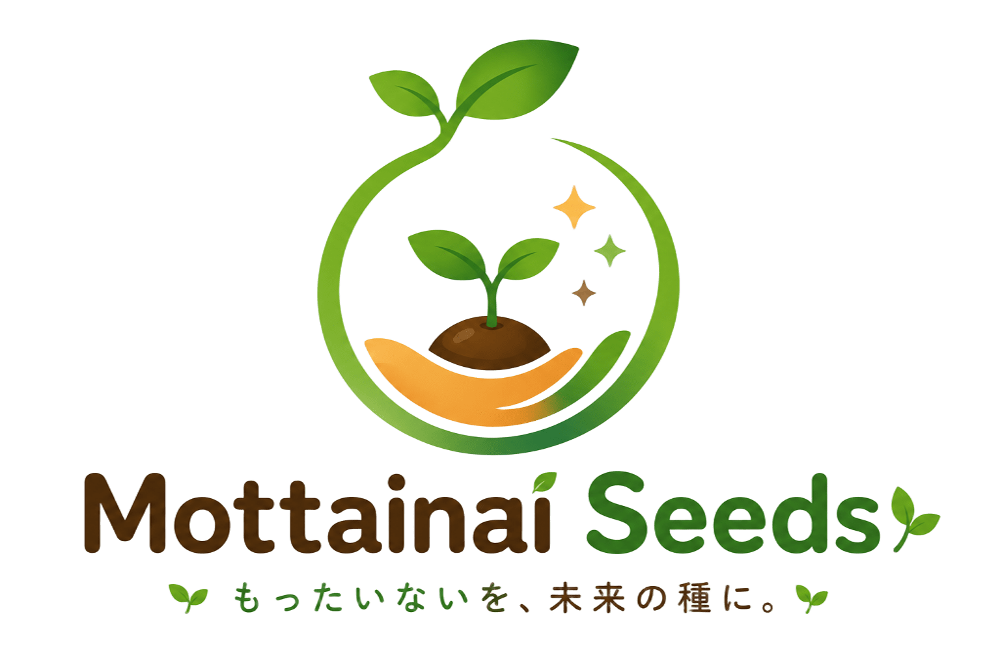
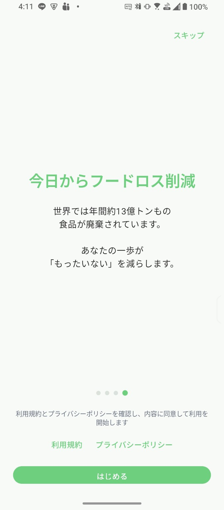
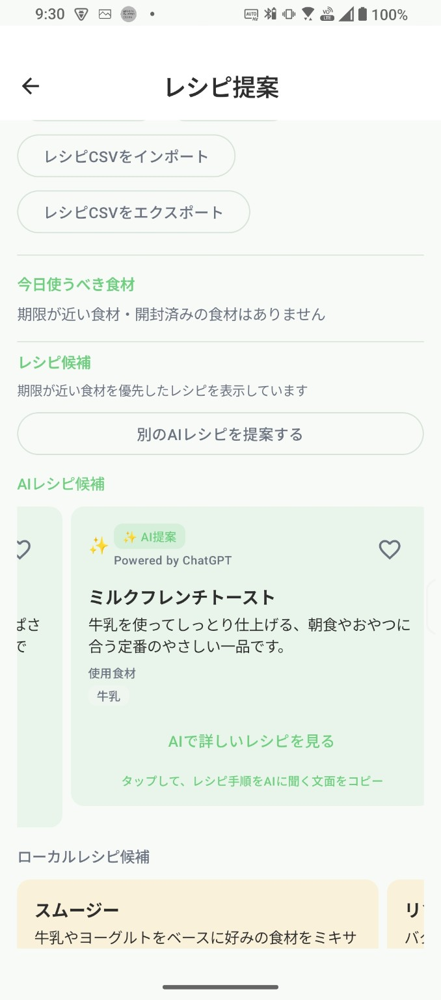
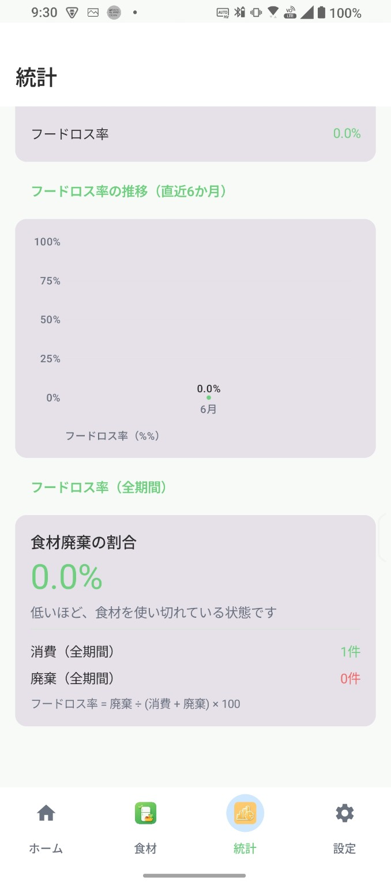

モッタくん
リーダー・まとめ役
「もったいない」に気づき、チームをまとめます。
食材の食品ロスを減らすための機能をまとめた、Mottainai Seeds の第一弾アプリです。

家庭の食材管理、期限の見える化、AIレシピ提案で日常の食べきりを支えます。
Mottainai Seedsは、日常の中にある「もったいない」を、暮らしを少し良くする種へ変えていくブランドです。
食材、時間、アイデア、習慣など、見過ごされがちな小さな価値をアプリの力で少しずつ育てていきます。
Mottainai Pantryは、家庭の食品ロス削減を支援する食材管理アプリです。賞味期限管理、買い物リスト、バーコード登録、OCR、AIレシピ提案などを通して、食材を無駄なく使い切る行動をサポートします。

すぐに始められる導入画面。

食材の状態をひと目で確認。

登録食材からレシピを提案。

フードロスの推移を確認。
Mottainai Seeds の世界を支える6人のキャラクターが、見つける・つなぐ・食べきる・活かす・応援する・育てる、それぞれの役割で暮らしを支えます。
リーダー・まとめ役
「もったいない」に気づき、チームをまとめます。

つなぎ役・アイデアマン
アイデアと行動をやさしくつなげます。

食べきりの達人
おいしく食べ切るための工夫が得意です。

チェック好き・知恵者
データと知識で行動を支えます。

応援好き・ムードメーカー
続ける気持ちを明るく応援します。

未来好き・アーティスト
未来を描き、アイデアをカタチにします。
Mottainai Seedsでは、Mottainai Pantry を第一歩として、暮らしの中のさまざまな「もったいない」を少しずつ減らすアプリを育てていきます。
開発状況や更新情報は公式Xでも案内しています。